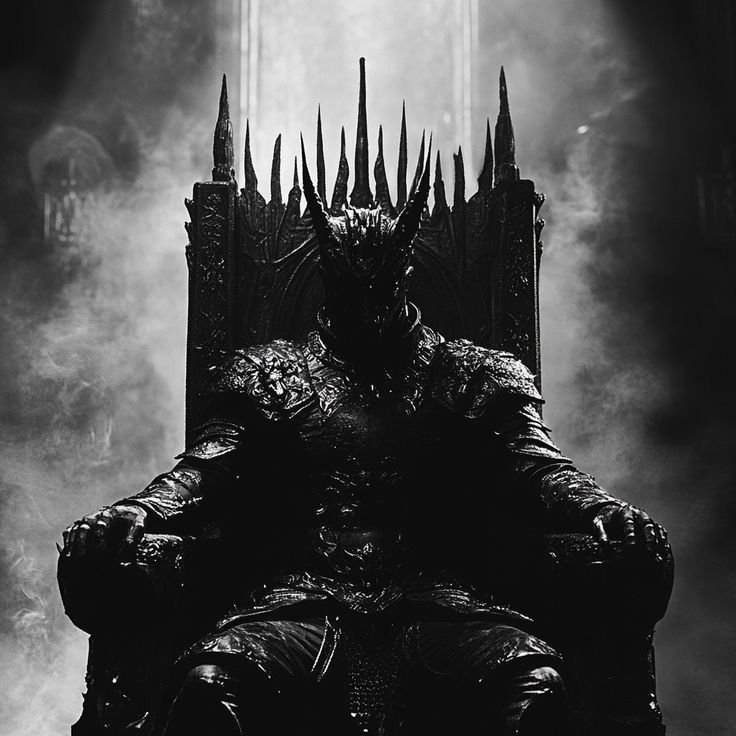

به گارد RM خوش آمدید
یک مجموعه منسجم و متحد در روبیکا، با هدف ایجاد محیطی امن، صمیمی و قابل اعتماد برای اعضا.
پروفایل گپ
مقامدارهای گارد
توضیحات گارد
گارد آر ام
سلام به همه شما عزیزان.
اینجانب کارن آر ام، خالق دوم آر ام، مفتخرم که اعلام نمایم گارد آر ام در تاریخ ۱۴۰۳/۸/۱۳ به همت بنده و جناب حسین آر ام، خالق یک آر ام، تأسیس گردید.
لازم به ذکر است که نقش اصلی و محوری این مجموعه بر عهده جناب حسین آر ام میباشد و بنده در کنار ایشان افتخار همکاری دارم. از ایشان صمیمانه قدردانی میکنم.
گارد آر ام چیست؟
🔷 گپ چت: محلی برای صحبت، گفتگو و تعامل آزادانه اعضا با یکدیگر.
🔷 گارد: بخشی برای مقابله با بدخواهان، افرادی که قصد آسیب رساندن به مجموعه یا اعضای آن را دارند و هرگونه تهدید و مزاحمت.
به طور کلی، گارد آر ام یک مجموعه منسجم و متحد است که در روبیکا فعالیت میکند و هدفش ایجاد محیطی امن، صمیمی و قابل اعتماد برای اعضای خود میباشد.
ما در گارد آر ام همواره میکوشیم محیطی سالم و امن فراهم کنیم تا همه اعضا با خیال راحت در کنار هم باشند. اعتماد و حمایت شما بزرگترین سرمایه ماست.
از تمامی شما عزیزانی که در این مسیر همراه ما هستید، صمیمانه سپاسگزارم.
در صورت وجود هرگونه سؤال یا نیاز به راهنمایی، همواره در خدمت شما هستیم.
با احترام،
کارن آر ام
قوانین گارد
افتخارات و سوابق
تأسیس RM GUARD
گارد RM در تاریخ ۱۴۰۳/۸/۱۳ به همت خالق اول و خالق دوم تأسیس شد.
سابقه فعالیت
RM GUARD از سال ۱۴۰۳ فعالیت خود را در روبیکا ادامه داده و در مسیر توسعه مجموعه و جامعه اعضای خود فعال بوده است.
سوابق رقابتی
طبق سوابق و روایت مدیریت گارد، RM GUARD در رقابتها و درگیریهای گروهی با دنی میم، لشکر سوخته و سومکا به پیروزی رسیده است.
اطلاعیهها
این بخش در صورت انتشار اطلاعیه جدید فعال خواهد شد.
ارتباط با مدیریت
مدیریت از طریق روبیکا پاسخگو است.